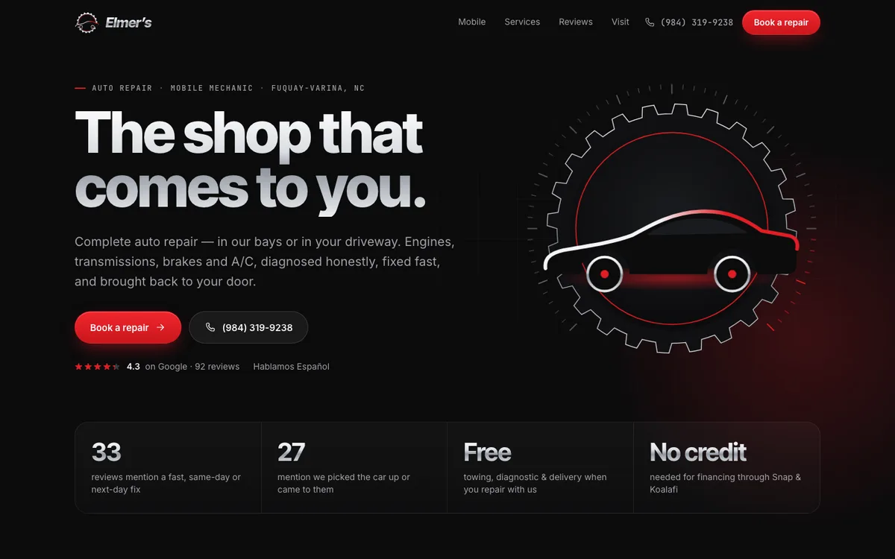

Elmer’s Auto Repair & Mobile Service
- 92 Google reviews read
- Logo redrawn as vector
- 13 real shop photos
- Mobile-first
We read every review, redraw the logo, gather the real photos, and rebuild the site — premium, fast and true to the business. Then we hand the owner a link.
Work

Approach
Every Google review, every photo, the old site and socials — what customers actually love.
The logo redrawn as clean vector. Facts checked against sources. Nothing invented.
Premium, mobile-first, fast. Real proof — quotes, numbers, photos — instead of adjectives.
A live link the owner can open on their phone today, ready to go live on their domain.